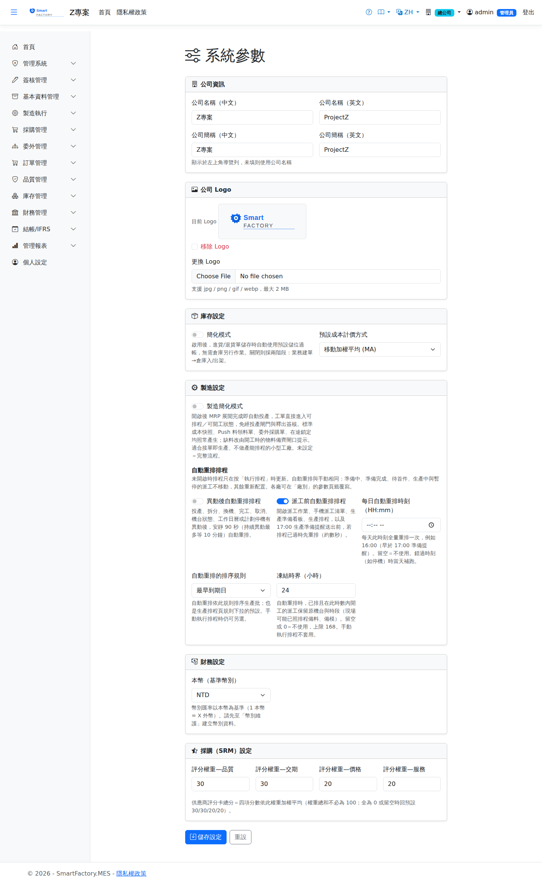

系統參數System Parameters
系統參數是System parameters are 全公司共用shared company-wide的整體設定，不分廠別。修改後 settings for the whole company, not per plant. Once changed, 立即生效takes effect immediately（不需重新啟動）， 但影響範圍廣及所有模組，請由系統管理員統一維護。 (no restart needed), but because it reaches every module, it should be maintained centrally by the system administrator.

庫存設定Inventory Settings
| 參數Parameter | 預設Default | 說明Guide |
|---|---|---|
| 庫存簡化模式Simplified inventory mode | 關閉Close | 控制controls 過帳時機When posting happens。開啟後庫存單據建立／核准即直接過帳，不再走「建單 → 過帳」兩階段。 適合不需要單據覆核的小型倉庫。. With it on, an inventory document posts as soon as it is created or approved, instead of going through the two stages of creating and then posting. It suits small warehouses that do not need documents to be reviewed. |
| 預設計價方式Default costing method | 移動平均（MA）Moving average (MA) | 全系統存貨計價方式，可選移動平均或先進先出（FIFO）。The inventory costing method for the whole system: moving average or first-in first-out (FIFO). |
製造設定Manufacturing Settings
| 參數Parameter | 預設Default | 說明Guide |
|---|---|---|
| 製造簡化模式Simplified Manufacturing Mode | 關閉Close | 控制controls 流程關卡Process gates。開啟後 MRP 展開完成，工單直接進入「已投產」， 不需要人工到工單／生產批畫面按「投產」。. With it on, work orders go straight to "released" as soon as the MRP run finishes, with no need to go to the work order or production batch screen and click "Release". |
| 異動後自動重排排程Reschedule automatically after changes | 關閉Off | 投產、拆分、換機、完工、取消、機台狀態、工作日曆或計劃停機有異動後，安靜 90 秒（持續有異動時最多等 10 分鐘）自動重排。After a release, split, machine switch, completion, cancellation, machine status change, work calendar change or planned downtime change, the schedule is re-run once things have been quiet for 90 seconds (at most 10 minutes while changes keep coming). |
| 派工前自動重排排程Reschedule automatically before dispatch | 關閉Off | 開啟派工作業、手機派工清單、生產準備看板、生產排程，以及 17:00 生產準備提醒送出前，若排程已過時先重排（約數秒）。If the schedule is out of date, it is re-run (a few seconds) before Dispatch Operations, the mobile dispatch list, the Preparation Board or Production Schedule opens, and before the 17:00 preparation alert is sent. |
| 每日自動重排時刻（HH:mm）Daily automatic rescheduling time (HH:mm) | 不使用Not used | 每天此時刻全量重排一次，建議早於 17:00 準備提醒，例如 16:00。錯過時刻（例如伺服器停機）時當天之內補跑，同一天不重跑。A full re-run once a day at this time; set it before the 17:00 preparation alert, for example 16:00. If the time is missed (for example the server was off) it runs later the same day, and never twice on one day. |
| 自動重排的排序規則Sequencing rule for automatic runs | 未設定（優先順序）Not set (Priority) | 自動重排依此規則排序生產批（優先順序、最早到期日、最短工時、先進先出、後進先出），也是生產排程頁規則下拉的預設；手動執行排程時仍可另選。Automatic runs sequence production batches by this rule (Priority, Earliest Due Date, Shortest Process Time, FIFO, LIFO). It is also the default rule on the Production Schedule screen; a manual run can still pick another. |
| 凍結時界（小時）Freeze window (hours) | 不使用Not used | 自動重排時，已排且在此時數內開工的派工保留原機台與時段，例如設 24 表示明天這個時候以前要開工的派工不會被自動重排搬動。留空或 0＝不使用，上限 168。手動執行排程不套用。In automatic runs, scheduled dispatches starting within this many hours keep their machine and time slot — 24, for example, means nothing due to start before this time tomorrow is moved by an automatic run. Blank or 0 turns it off; at most 168. Manual runs ignore it. |
三種自動重排可以並用，以上五項各廠都可在The three kinds of automatic rescheduling can be combined, and each plant can override all five settings above on the parameter tab of 廠別管理Plant Management的參數頁籤覆寫。運作方式見. How it works is described under 生產排程 → 自動重排排程Production Schedule → Automatic rescheduling。.
製造簡化模式開啟後有什麼不同What changes when simplified manufacturing mode is on
| 步驟Step | 關閉（預設）Off (default) | 開啟On |
|---|---|---|
| MRP 執行單MRP Run | 人工建立、挑選要展開的訂單明細，再按「執行 MRP」Create it by hand, pick the order lines to explode and click "Run MRP" | 訂單核准後自動建立並執行Created and run automatically once the order is approved；存檔後的提示訊息會告訴您產生的執行單號; the message shown after saving tells you the run number that was created |
| MRP 展開MRP run | 產生生產批與工單，工單狀態＝creates the production batch and the work orders, with a work order status of 計劃中Planned | 相同，但展開後接續自動投產the same, except that the run is followed by an automatic release |
| 投產Release | 人工到工單或生產批畫面按「投產」，系統重算需求量、檢查缺料，缺料Someone goes to the work order or production batch screen and clicks "Release"; the system recalculates the demand and checks for shortages, and a shortage 擋住不給投blocks the release | 此步驟消失this step disappears；數量沿用展開時的計劃量，缺料; the quantity is the planned quantity from the run, and a shortage 不擋單does not block the document |
| 簽核Approval | 依簽核設定可能需要送審may need to be submitted for approval, depending on the approval settings | 視同已核准treated as approved，不送審。例外：該廠有工單簽核流程，且明確設了金額門檻（成本超過者）或開了強制送審條件（委外／重工／延期）時，符合的工單仍會送審，核准後才能開工, without approval. Exception: if the plant has a work order approval flow and has explicitly set an amount threshold (for orders above it) or turned on a mandatory approval condition (outsourced / rework / delayed), matching work orders are still submitted and can be started only after approval |
| 領料單Material Requisitions | 投產核准時自動產生（推式用料）Created automatically when the release is approved (push material) | 相同，自動產生the same, generated automatically |
| 委外採購單Outsource purchase order | 委外工單投產時自動建立Created automatically when an outsource work order is released | 相同，自動建立the same, created automatically |
| 排程Scheduling | 需先排程，派工由「待排程」推進到「已排定」才能開工It has to be scheduled first: the dispatch has to move from "to be scheduled" to "scheduled" before work can start | 此步驟可略過this step can be skipped；派工停在「待排程」也能直接開工，現場待辦清單一併顯示這些派工; work can start even while the dispatch is still "to be scheduled", and such dispatches appear in the shop-floor to-do list |
| 開工／完工／報工Start / finish / report | 照常操作works as usual | 操作方式相同the way it works is the same；另加一道工序順序檢查（見下）; plus an operation sequence check (see below) |
另請注意：若貴公司的訂單有設定Also note: if your orders have 簽核流程Approval flow、且核准動作是在「待我簽核」畫面完成的， 該張訂單會等到下一次有訂單核准時才一併展開；簡化模式的建議用法是訂單不設簽核流程。 and the approval is given on the "Pending my approval" screen, that order waits for the next order approval before it is exploded; with simplified mode the recommendation is not to put an approval flow on orders at all.
財務設定Finance Settings
| 參數Parameter | 預設Default | 說明Guide |
|---|---|---|
| 本位幣Local Amount | 未設定Not set | 公司帳務的記帳幣別，作為所有匯率換算的基準。下拉只列出The currency the company's books are kept in, the basis of every conversion. The dropdown only lists 啟用中Active的幣別， 請先在「幣別 / 匯率」建立後再回來設定。 currencies; create it under "Currency Maintenance" first and then come back to set it. |
採購（供應商評分卡）設定Purchasing (supplier scorecard) settings
供應商總分的加權權重，四項合計不必剛好 100，系統會依比例換算。留空即回到預設值。Weight of this item in the supplier's total score; the four weights do not have to add up to exactly 100, as the system scales them proportionally. Leave it blank to go back to the default.
| 參數Parameter | 預設Default | 說明Guide |
|---|---|---|
| 品質權重Quality weight | 30 | 進料檢驗合格率等品質面向的比重Weight given to quality aspects such as the incoming inspection pass rate |
| 交期權重Delivery weight | 30 | 準時交貨率的比重Weight given to the on-time delivery rate |
| 價格權重Price weight | 20 | 報價競爭力的比重Weight given to how competitive the quotes are |
| 服務權重Service weight | 20 | 配合度、回應速度等的比重Weight given to cooperativeness, responsiveness and the like |
相關畫面Related screens
幣別 / 匯率Currency / Exchange Rate、MRP 執行MRP Run、 工單查詢Work Orders、生產批投產Batch Release、 派工作業Dispatch Operations